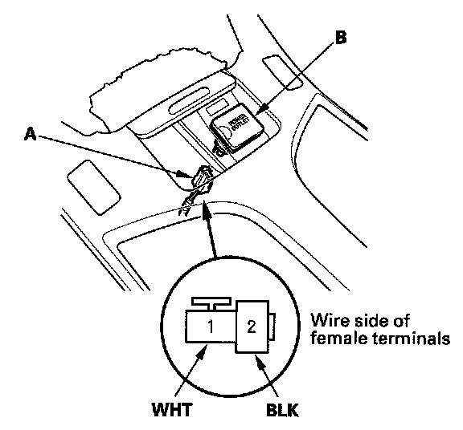
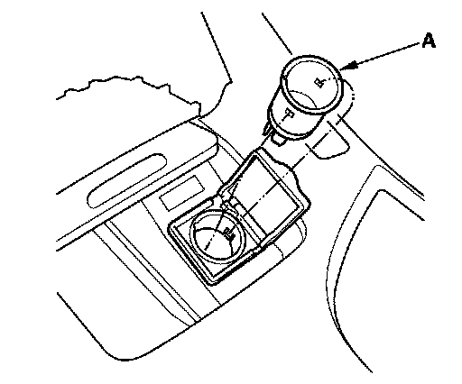
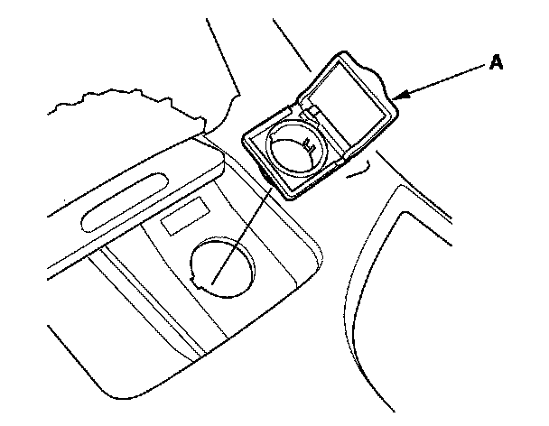

Front Accessory Power Socket Test/Replacement
Front Accessory Power Socket Test/Replacement1. Remove the console panel.

2. Disconnect the 2P connector (A) from the front accessory power socket (B).
3. Inspect the connector terminals to be sure they are all making good contact.
- If the terminals are bent, loose, or corroded, repair them as necessary and recheck the system.
- If the terminals look OK, go to step 4.
4. Turn the ignition switch to ACC (I).
5. Measure the voltage between the No. 1 terminal and body ground. There should be battery voltage.
- If there is battery voltage, go to step 6.
- If there is no battery voltage, check for:
- Blown No. 32 (10 A) fuse in the under-dash fuse/relay box.
- Blown No. 9 (15 A) fuse in the under-dash fuse/relay box.
- Faulty accessory power socket relay.
- Faulty under-dash fuse/relay box.
- Poor ground (G 601).
- An open in the wire.
6. Check for continuity between the No. 2 terminal and body ground. There should be continuity.
- If there is continuity, go to step 7.
- If there is no continuity, check for:
- Poor ground (G 507).
- An open in the wire.

7. Remove the socket (A).

8. Remove the housing (A).
9. Install the power socket in the reverse order of removal.